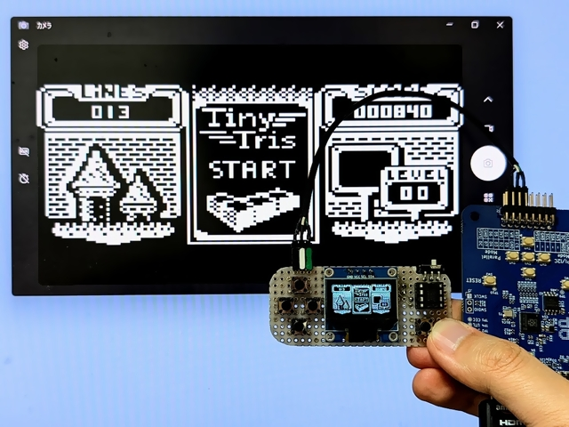

Configuration for TinyJoyPad

See also: LcdTap: TinyJoyPad や Arduboy を大画面で遊ぶ
Using LcdTap-Pico2 Universal
Connection
| LcdTap (Pico2) | Connection |
|---|---|
| GND | TinyJoyPad’s GND |
| GPIO8 (SDA) | TinyJoyPad’s SDA |
| GPIO9 (SCL) | TinyJoyPad’s SCL |
Configuration
Load preset for TinyJoyPad.
Using LcdTap-Pico2 for SSD1306
Connection
| LcdTap (Pico2) | Connection |
|---|---|
| GND | TinyJoyPad’s GND |
| GPIO8 (SDA) | TinyJoyPad’s SDA |
| GPIO9 (SCL) | TinyJoyPad’s SCL |
| GPIO20 (CFG_OUT_720P) | Select according to your display |
| GPIO21 (CFG_LCD_SIZE_SEL) | Open or 3V3 (128x64) |
| GPIO22 (CFG_IFACE_SEL) | Open or 3V3 (I2C) |
| GPIO27/28 (CFG_ROT[1:0]) | binary rotary switch or DIP-switch |